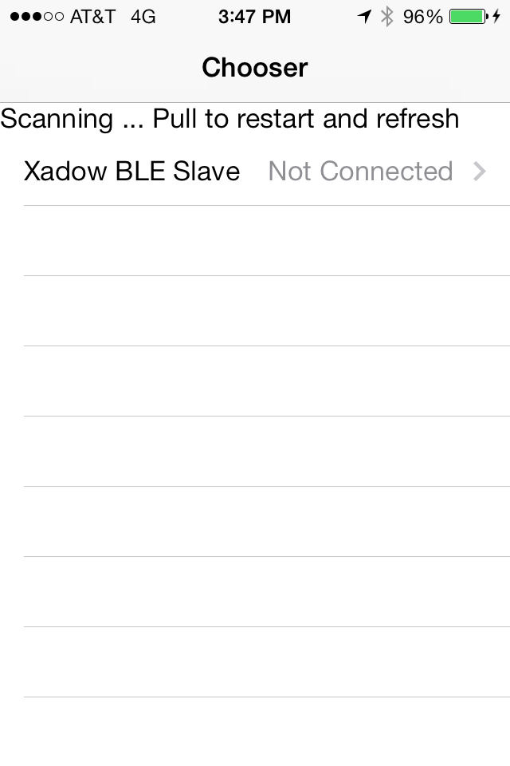
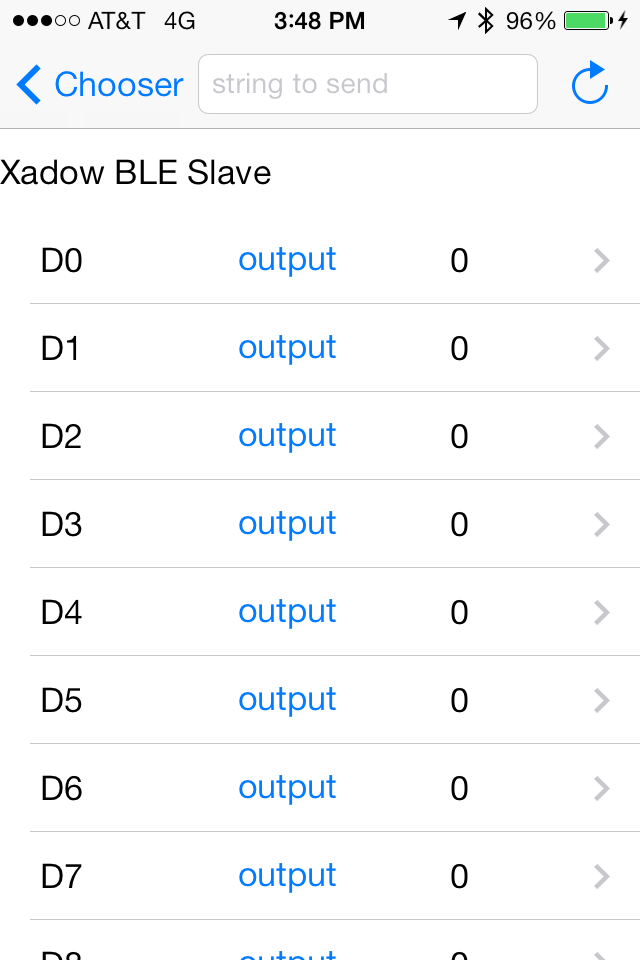
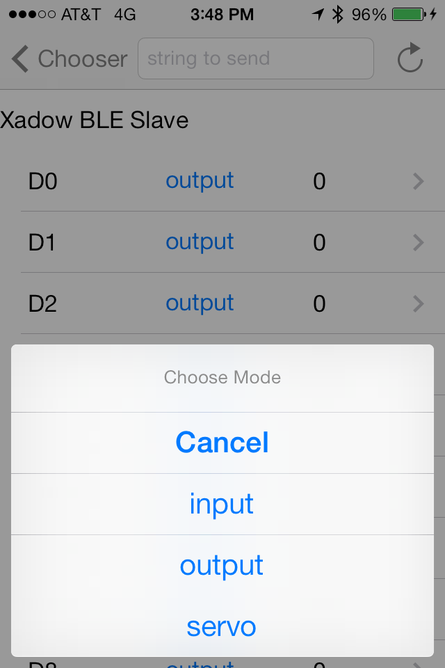
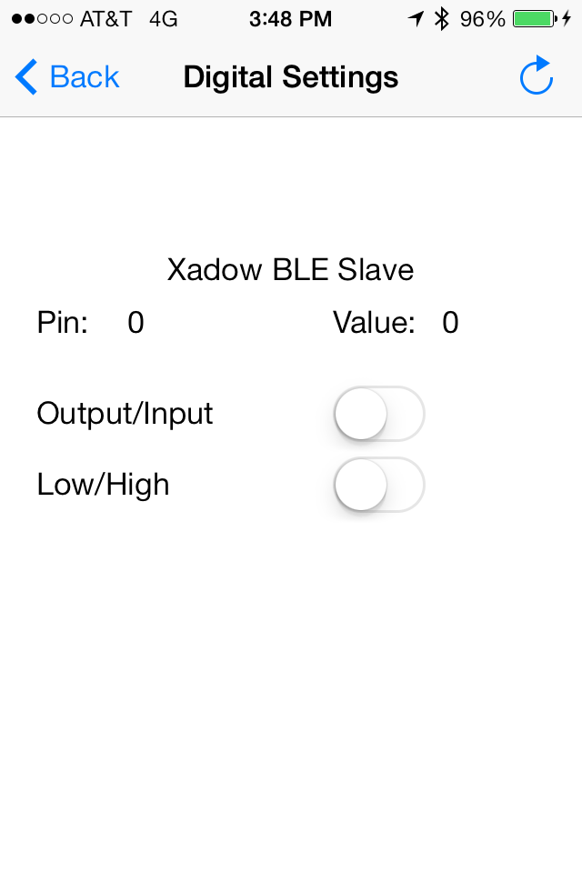
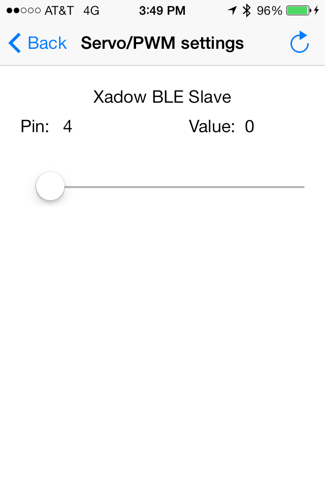

Description
Firmata lets you connect Arduino to computers and other Arduino boards. iFirmata lets you control your Arduino from your idevice!
You need:
- Supported iDevice
- Supported Bluetooth LE module and Arduino
- Firmata library
- Firmata Sketch
- iFirmata App available in the app store or compile it yourself.
Supported iDevice
iOS 6 or later -- iPhone 4s and later; iPad 3 and later; iPod Touch 5; iPad mini
Supported Bluetooth LE module and Arduino
Currently the Xadow and Redbear BLEShield.
Firmata Library
Firmata library version 2.3.1 comes standard in Arduino. 1.0.5 and Firmata library version 2.3.6 comes standard in Arduino Beta 1.5.3. For Redbear either of these should be fine. However, the Xadow is basically a Leonardo Arduino and the Firmata people will tell you to utilize Firmata 2.3.2 or greater. If you followed the Seeed directions to add the Seeeduino Xadow to your Tools->Board, you're probably stuck on Arduino 1.0 so you need to download the 2.3.2 or newer zip file. Since its a built in library you can't just install it in your user libraries directory like Documents/Arduino/libraries because Arduino will use the other copy! You need to go into your arduino executable directory and overwrite the libraries/Firmata folder.
Firmata Sketch
The standard firmata sketch is found in the examples -> firmata - standard firmata HOWEVER this will need changes for MOST BLE modules -- Check with your BLE module provider. We've done Xadow and Redbear examples. Burn it to your Arduino!
iFirmata App
Download iFirmata from the App Store and start controlling your Arduino!.
Or for more advanced developers you can compile your own copy and even make your own custom app with the source code.
IOS Developers
BUILD REQUIREMENTS:
- Xcode 5 or greater
- iOS 7 SDK or greater
RUNTIME REQUIREMENTS:
- iOS 6 or later Bluetooth LE Capable Device Bluetooth LE Sensor/s
Install it the hard way
A dependancy of this code is the OpenBLE cocoapod to manage your Ble service
Download iFirmata and OpenBLE and copy everything in /Classes into your xcode project. Or more preferrably use cocoapods to get both at the same time.
Install it via Cocoapods
Create a new xcode project or workspace or go to your existing, open a terminal in that directory, and type:
sudo gem install cocoapods
touch Podfile
echo -e "platform :ios, '5.0'\npod 'iFirmata'" >> Podfile
pod installOr if you're using the example, theres already a podfile so just cd to that directory and type:
sudo gem install cocoapods
pod installIt should complete and tell you to utilize the .xcworkspace from now on.
Use it
Click on that xcworkspace file to open your project from now on and youll find your project with the source code all loaded up. Now you can:
#import "Firmata.h"And have your class register as a Firmata protocol:
@interface DetailViewController : UIViewController <FirmataProtocol>
@endSee the OpenBLE cocoapod to see how to scan and connect to a bluetooth service with read and write characteristics. Then you can init a firmata object with it:
Firmata *currentFirmata = [[Firmata alloc] initWithService:service controller:dest];And make some sort of call like analog mapping query to find all the available pins on the device:
[currentFirmata analogMappingQuery];When the BLE returns to firmata, it will parse it and return a delegate so set up a delegate function:
- (void) didUpdateAnalogMapping:(NSMutableDictionary *)analogMapping
{
for (NSString* key in analogMapping) {
NSLog(@"key: %@ value: %@", key, [analogMapping objectForKey:key]);
}
}Example app
Open the example app in /examples for a much more thorough implementation example. It lists bluetooth devices, connects, and when it recieves read and write characteristics segues to a screen where you set pin modes, set or read pins, control servos and pwm and even send i2c data.

Support or Contact
Use the github issues queue https://github.com/iFirmata/iFirmata/issues to report bugs or contribute code.